Tyrangiel, AI for Good: How Real People Are Using Artificial Intelligence to Fix Things That Matter (Simon & Schuster, 2026), ch. 4

Tyrangiel, AI for Good: How Real People Are Using Artificial Intelligence to Fix Things That Matter (Simon & Schuster, 2026), ch. 4

Tyrangiel, AI for Good: How Real People Are Using Artificial Intelligence to Fix Things That Matter (Simon & Schuster, 2026), ch. 4
“Johnson decided she would attempt to do for all of them what she had only just begun to try with her son: build a comprehensive framework to understand the meaningful communication in their vocalizations and gestures. If she could do that, then one day she might be able to build a translation device that would connect them with the world beyond their parents and caregivers.”
Tyrangiel, AI for Good: How Real People Are Using Artificial Intelligence to Fix Things That Matter (Simon & Schuster, 2026), ch. 4
“He used CLIP, OpenAI’s heavyweight model that recognizes images and text, as a kind of tutor. CLIP did the heavy lifting, teaching a smaller, more specialized model to recognize and quantify behaviors like reaching, self-soothing, or signaling rejection—essentially turning body language into math. Instead of brute-forcing more data into existence, Shah simply let the big model explain things to the little one.”
Tyrangiel, AI for Good: How Real People Are Using Artificial Intelligence to Fix Things That Matter (Simon & Schuster, 2026), ch. 4
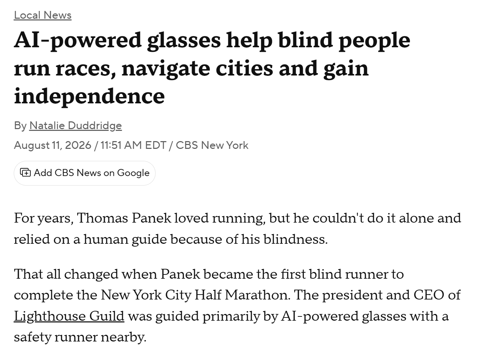
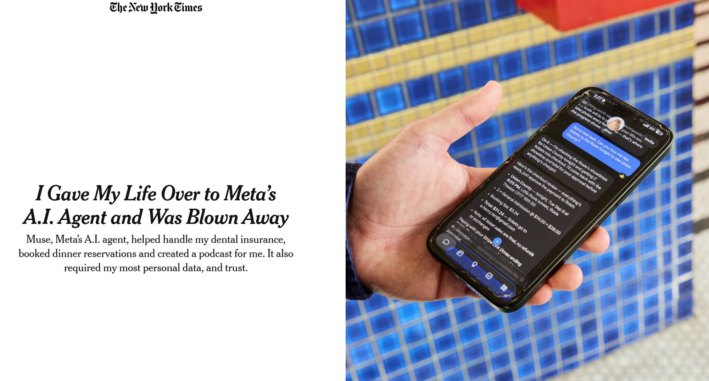
“Just as important as what you begin to do with AI is what you decide not to do. When a company offers an AI feature that makes you uneasy—because it’s generating sloppy content, or replacing a human you’d rather talk to, or feels like a solution in search of a problem—don’t use it. This isn’t about being a Luddite or a dissident. It’s about the fact that user behavior is the most powerful feedback mechanism.”
Tyrangiel, AI for Good: How Real People Are Using Artificial Intelligence to Fix Things That Matter (Simon & Schuster, 2026), ch. 4
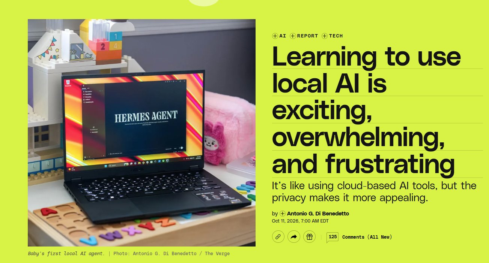
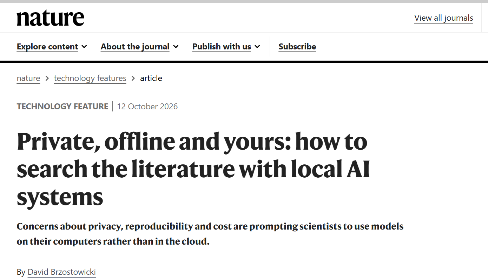
The October inflection point
“I’ve written before about how November 2025 was an inflection point for coding agents—the point where Opus 4.5 and GPT-5.1 crossed a tipping point that meant their respective coding agents became reliable daily drivers for software engineers. I think we’ve reached a new inflection point in October 2026, and this time it’s for vibe coding computer games.”
Willison, “The October inflection point for vibe game development,” Oct. 28, 2026
“Make it a LOT more fun”
“Models have been able to create something that looks like a game for quite a while now, as seen in my previous experiments. The challenge has been getting to a game that’s actually fun to play. […] I didn’t think the models could do it. Then I tried telling Claude Opus 5.5 to ‘Make it a LOT more fun’... and it did.”
Willison, “The October inflection point for vibe game development,” Oct. 28, 2026
Tree Appreciator: one shot
> Build a three js game called "Tree appreciator" - it shows you two algorithmically generated trees and the game mechanics is about appreciating the differences between them. Think hard about how to make sure it is both fun and beautiful.
“This game required no iteration or follow-up prompting at all—I got the game in a single shot.”
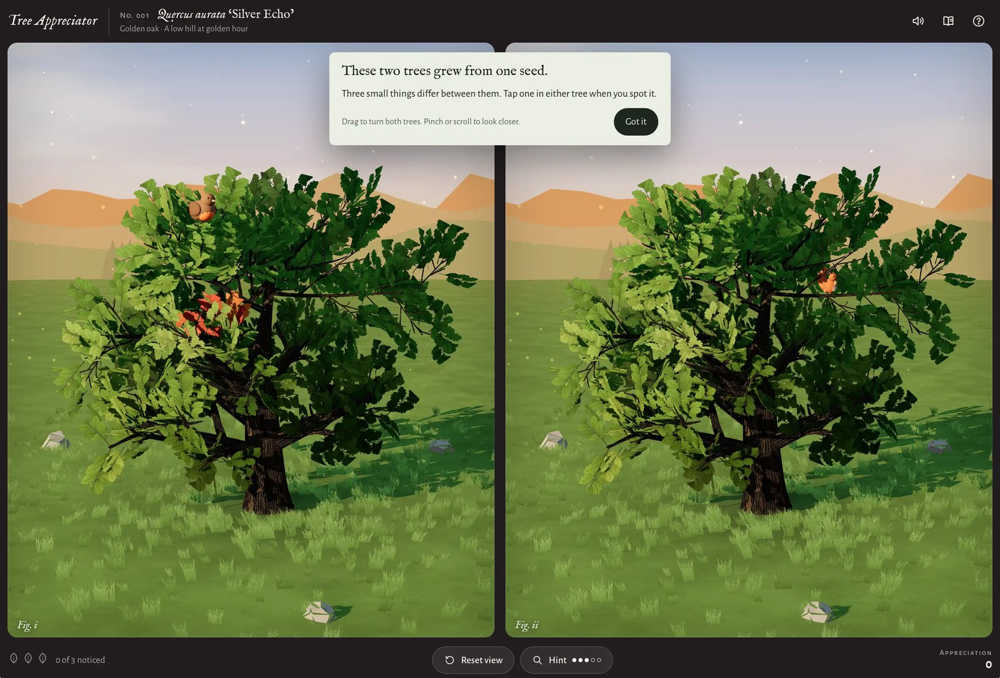
https://tools.simonwillison.net/tree-appreciator · Willison, “The October inflection point for vibe game development,” Oct. 28, 2026
Emberwick: whose creativity?
“I played it through from start to finish and found myself emotionally affected by the ending! I’m somewhat embarrassed by this, because everything in this game—the graphics, the plot, the characters, the music, the dialog—came from the model. My creative input was pretty much just ‘it’s a fantasy village and there’s a troll asleep in a cave’.”
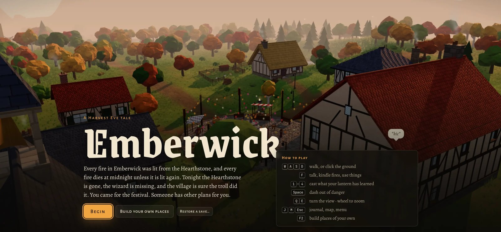
https://simonw.github.io/emberwick/v11/emberwick.html · Willison, “The October inflection point for vibe game development,” Oct. 28, 2026
Quarter Sun Cove: the before-times
“This isn’t my best game yet—it’s not as fun to play as Battle Drones—but it represents the kind of game I want more of: weird, fun, uniquely personal—something that wouldn’t have been built in the before-times.”
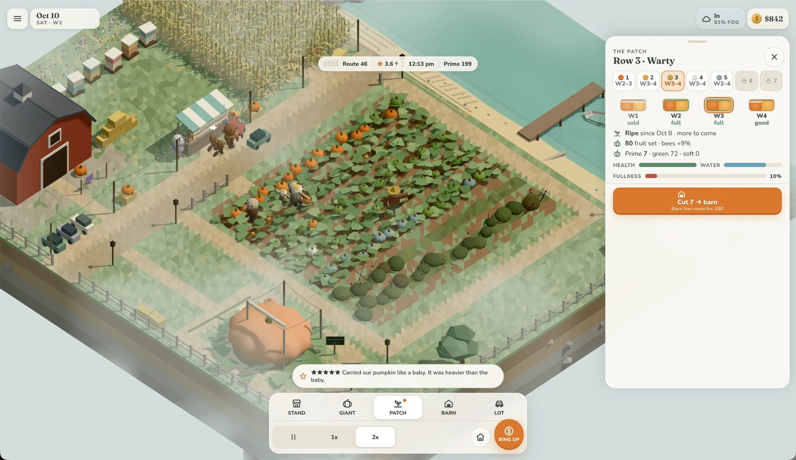
https://simonw.github.io/pumpkin-farmer/ · Willison, “The October inflection point for vibe game development,” Oct. 28, 2026
Four times as insulting
“If you are offended by AI-generated art, AI-generated music, AI-generated writing, and AI-generated code, I have bad news for you: vibe coded games combine all of those at once.”
Willison, “The October inflection point for vibe game development,” Oct. 28, 2026
A split
“I expect that, as we’ve already seen with programming, this will result in a split. Some players will refuse to have anything to do with games that were built in this way. Others may embrace this as opening up game development to a much wider audience. I lean in that direction!”
Willison, “The October inflection point for vibe game development,” Oct. 28, 2026
Exciting and shameful
“The thing I find both exciting and shameful about this is that I have got interesting results from so little creative input. The projects I’ve described here are loosely ordered by how much effort I’ve put into them. Not a single project represents more than four hours of my work (plus many more hours of Claude Code churning away by itself).”
Willison, “The October inflection point for vibe game development,” Oct. 28, 2026
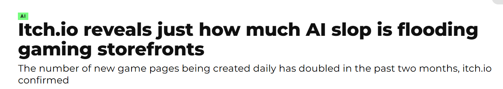
“Itch.io reveals just how much AI slop is flooding gaming storefronts,” Polygon
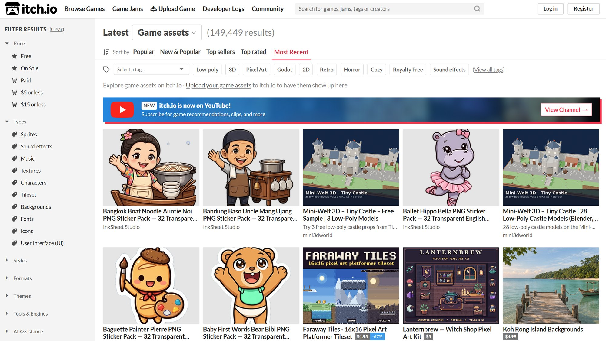
itch.io, Game assets, sorted by Most Recent, Nov. 7, 2026
Sam Altman on local inference
“A lot of people want local inference. And somehow, they assume that the problem is solved now. Because, we are going to have open-source models. We’re going to be able to run them on our computers. And so we’re not going to need all the stuff in the data center.
But from a global allocation perspective, actually, it’s quite terrible to have everybody have a bunch of the world’s limited supply of DRAM sitting in their own computer. And, being used—Mm-hmm. 5% of the time. You want maximum utilization in the cloud if you’re trying to deal with this very supply constrained environment.”
Sam Altman, quoted in Masnick, “Sam Altman’s Case Against Your RAM Is Efficient. That’s the Problem.” Techdirt, Nov. 2, 2026
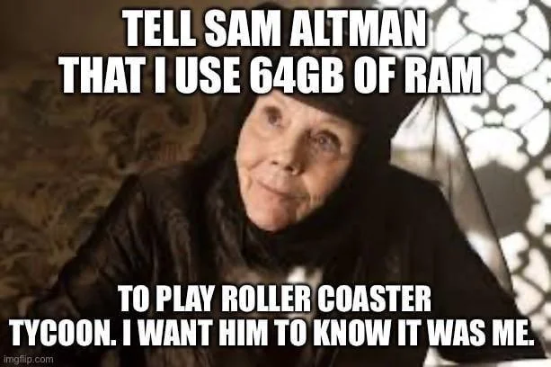
Who controls the stack?
“We’ve seen what happens when a central provider controls key parts of our stack, and the results are very, very, very bad.
Using open weight models on local hardware may not be the most efficient for the exact price of RAM (which, again, Altman tried to corner the market on), but it certainly leads to much more actual user empowerment by people who want to use these tools, but without outsourcing control to someone like Altman.”
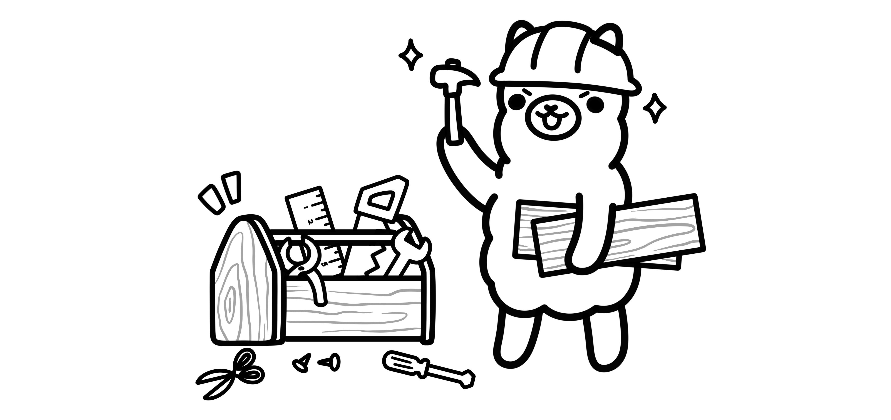